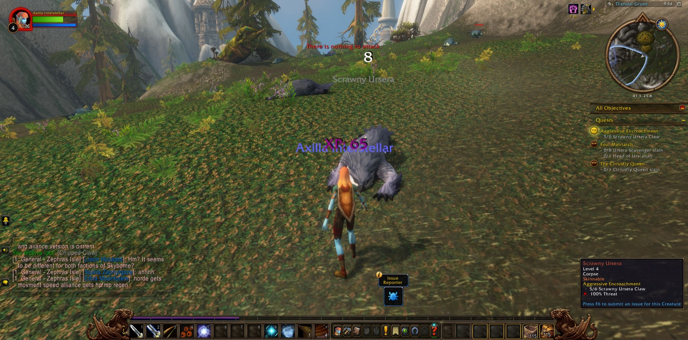
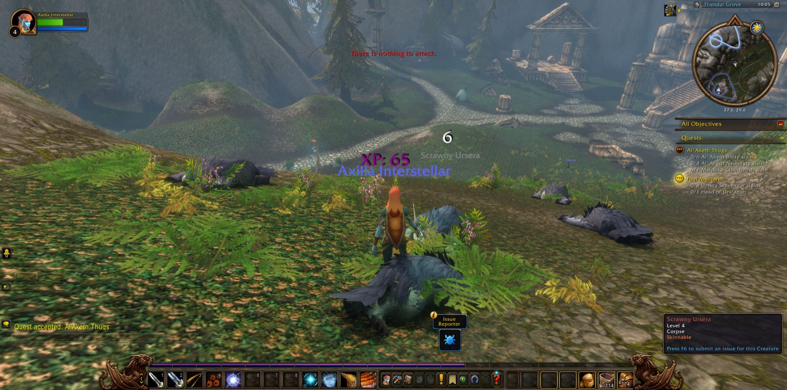
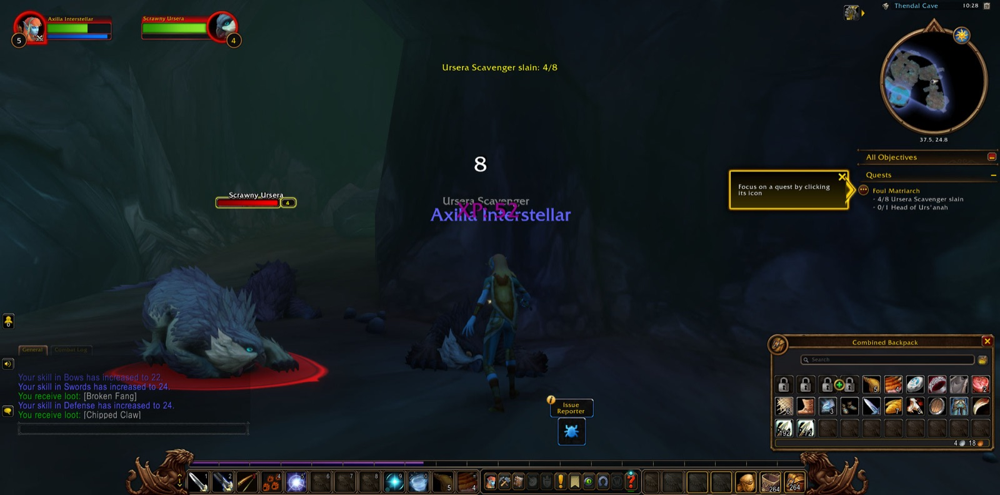
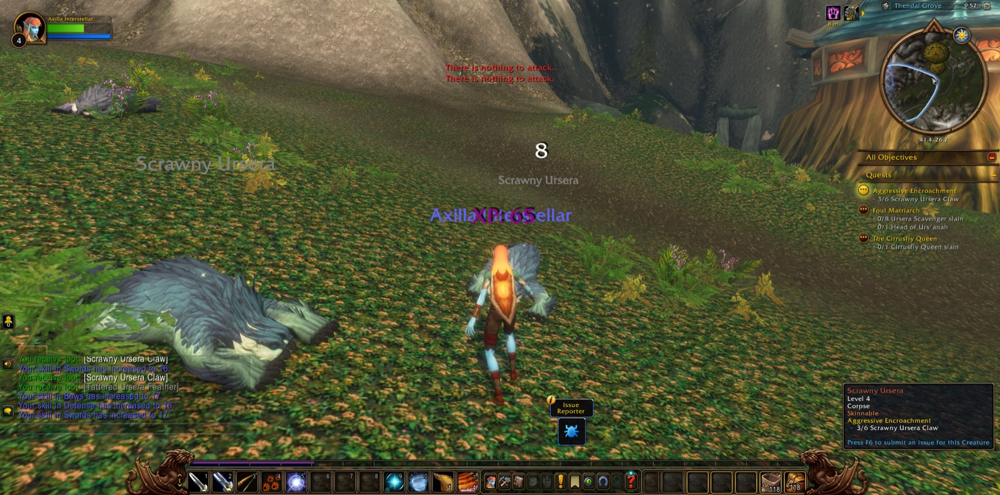

Axilla Interstellar opened her eyes in Thendal Village on Zephras Isle, and the world began simply enough: a small task of coming of age, done almost before it was begun, and then the deeper work of Harmony in Balance waiting in Thendal Grove. She loosed her first arrows there against the Juvenile Vuldren, eight of them in all, and felt the small, unmistakable shift of Level 2 settle over her before she had even caught her breath.


The village kept finding more for her. She learned to Walk on Air for Falling With Style, viewed the Anchor Pylon for the Anchors of Zephras, and in Thendal Grove read a scribbled note before seeking out Tai'ree Farsight to learn the Way of the Hunter. Windstones wanted harvesting, elemental unrest wanted quieting. Then came Agitators, and the Standing Stones — Al'Aketh Converts and Roiling Winds falling one after another, until something finally got the better of her and she died there for the first time, waking back in the village and walking the road out again without complaint. By the time the Convert count and the Roiling Winds count both closed out, she had reached Level 3.


The cirrusflies of the Grove troubled her next, eight of them dead for the Infestation Investigation and a fourth level earned in the doing. Scrawny Ursera fell to the Aggressive Encroachment, the Cirrusfly Queen to her own dedicated hunt, and then the Foul Matriarch's trail led her into Thendal Cave itself, where Ursera Scavengers gave way at last to Urs'anah. The Al'Aketh Thugs cost her more than sweat — Brutes, Neophytes, and a Malduko Cloudcrush left her dead twice more in the Grove before Level 5 arrived, hard-earned and a little bruised.


She left Thendal behind for the Shen'dar Highlands and Shen'dar Village, where the pace eased. She sat by a campfire and let the Boosted Rest settle into her bones, learned cooking from Zerril Softbreeze, listened to Illaya Amberwind explain the Windshapers, and took on a small mountain of new work — pilfered windstones, hippogryphs grown troublesome, a matriarch named Vulgara wanted dead. Level 6 came quietly there, almost gentle after the day's dying. Out past Windsong Lake and into Shadowgale Forest, death found her twice more before she settled into the rhythm of the Highlands proper, gathering three small eggs for the village larders as the afternoon wound down — no grand ending, just a hunter's second day finding its feet.



